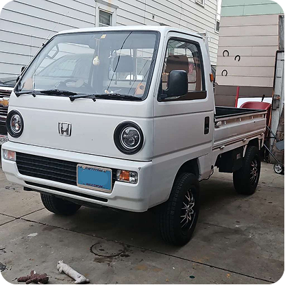
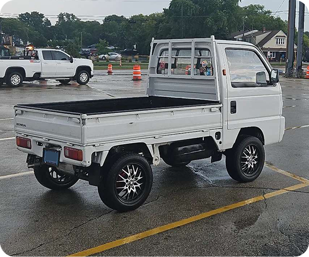
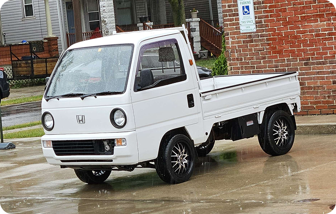
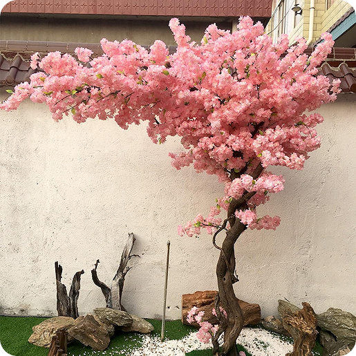
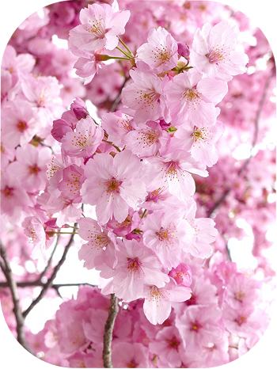
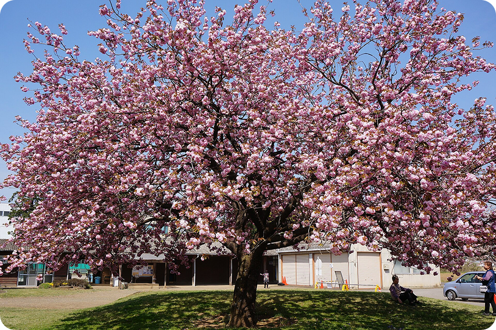

Inspiration Page
In here it’s where my inspiration came from. You can compare my model with the source of inspiration.
KEI TRUCK



The kei truck seen in these images are based on the truck my friend owns
SAKURA TREES


